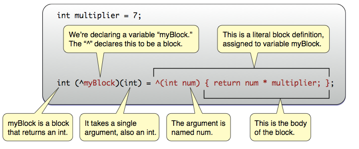

齊藤 潤 (@ST63Jun_)
void main(int argc, const char *argv[]) {
// character literals.
NSNumber *theLetterZ = @'Z'; // equivalent to [NSNumber numberWithChar:'Z']
// integral literals.
NSNumber *fortyTwo = @42; // equivalent to [NSNumber numberWithInt:42]
NSNumber *fortyTwoUnsigned = @42U; // equivalent to [NSNumber numberWithUnsignedInt:42U]
NSNumber *fortyTwoLong = @42L; // equivalent to [NSNumber numberWithLong:42L]
NSNumber *fortyTwoLongLong = @42LL; // equivalent to [NSNumber numberWithLongLong:42LL]
// floating point literals.
NSNumber *piFloat = @3.141592654F; // equivalent to [NSNumber numberWithFloat:3.141592654F]
NSNumber *piDouble = @3.1415926535; // equivalent to [NSNumber numberWithDouble:3.1415926535]
// BOOL literals.
NSNumber *yesNumber = @YES; // equivalent to [NSNumber numberWithBool:YES]
NSNumber *noNumber = @NO; // equivalent to [NSNumber numberWithBool:NO]
#ifdef __cplusplus
NSNumber *trueNumber = @true; // equivalent to [NSNumber numberWithBool:(BOOL)true]
NSNumber *falseNumber = @false; // equivalent to [NSNumber numberWithBool:(BOOL)false]
#endif
}// numbers.
NSNumber *smallestInt = @(-INT_MAX - 1); // [NSNumber numberWithInt:(-INT_MAX - 1)]
NSNumber *piOverTwo = @(M_PI / 2); // [NSNumber numberWithDouble:(M_PI / 2)]
// enumerated types.
typedef enum { Red, Green, Blue } Color;
NSNumber *favoriteColor = @(Green); // [NSNumber numberWithInt:((int)Green)]// strings.
NSString *path = @(getenv("PATH")); // [NSString stringWithUTF8String:(getenv("PATH"))]
NSArray *pathComponents = [path componentsSeparatedByString:@":"];NSArray *elements = @[ @"H", @"He", @"O", @"C" ];
NSDictionary *masses = @{ @"H" : @1.0078, @"He" : @4.0026, @"O" : @15.9990, @"C" : @12.0096 };NSMutableArray *array = ...;
NSUInteger idx = ...;
id newObject = ...;
id oldObject = array[idx]; // -> [array objectAtIndexSubscript:idx]
array[idx] = newObject; // replace oldObject with newObject
NSMutableDictionary *dictionary = ...;
NSString *key = ...;
oldObject = dictionary[key]; // -> [dictionary objectForKeyedSubscript]
dictionary[key] = newObject; // replace oldObject with newObject{
id obj = [NSArray alloc] init];
}ARCが有効の場合、コンパイラが次のように書き換える
{
id __strong obj = [NSArray alloc] init];
[obj release]; // 変数のスコープの範囲を超えるときにreleaseされる
}以下の制限が発生します:
- (void)dealloc {
// よくあるdeallocをオーバーライドするイディオム
[myObject release];
[super dealloc]; // <- ARC有効の場合はコンパイルエラーになるので消す必要がある
}コードによってはメモリリークが起こる (例：循環参照するオブジェクトの場合)
@interface MyObject : NSObject
{
id __strong mObj;
}
- (void)setObject:(id __strong)obj;
@end
@implementation MyObject
- (id)init
{
self = [super init];
return self;
}
- (void)setObject:(id __strong)obj
{
mObj = obj; // このときコンパイラは obj をretain する
}
@end{
id obj = [[MyObject alloc] init]; // -> obj.retainCount -> 1
[obj setObject:obj]; // -> obj.retainCount -> 2
}
// スコープ終了によりコンパイラが [obj release]
// obj.release -> 1
// まだretainCountが残っている -> メモリリーク!これは__weak修飾子を使うことで回避できる
@interface MyObject : NSObject
{
id __weak mObj; // __weak修飾子を指定
}
- (void)setObject:(id __strong)obj;
@end
@implementation MyObject
- (id)init
{
self = [super init];
return self;
}
- (void)setObject:(id __strong)obj
{
mObj = obj; // mObjは__weak修飾付きなので、コンパイラは obj を retain *しない*
}
@end{
id obj = [[MyObject alloc] init]; // -> obj.retainCount -> 1
[obj setObject:obj]; // -> obj.retainCount -> 1
}
// スコープ終了によりコンパイラが [obj release]
// obj.release -> 0
// [obj dealloc]が呼ばれてメモリ解放 -> All right!@interface Worker : NSObject
@end
@implementation Worker
// 処理終了後にコールバックするメソッド
- (void)somenthingToDo:(id)target delegate:(id)delegate {
[target ...]; // 何かする
[delegate didFinishedProcess];
}
@end
// コールバック用のメソッドをわざわざ作る必要がある
- (void)didFinishedProcess {
NSLog(@"Finished!");
}
- (void)test {
Worker *worker = [[Worker alloc] init];
[worker somethingToDo:target delegate:self];
}@interface Worker : NSObject
@end
@implementation Worker
// Blockを使うように変更
- (void)somenthingToDo:(id)target finished:(^callback)(void) {
[target ...]; // 何かする
callback();
}
@end- (void)test {
Worker *worker = [[Worker alloc] init];
[worker somethingToDo:target finished:^ {
NSLog(@"Finished!"); // 自然に記述できる!
}];
}コーディング量が減ったのがわかったと思います
int multiplier = 7;
int (^myBlock)(int) = ^(int num) {
return num * multiplier;
};
int func(int num) {
return num * 7;
}
int main() {
int multiplier = 7;
// 関数ポインタ
int (*myFuncPtr)(int) = &func;
// Block (関数ポインタの宣言と似てる)
int (^myBlock)(int) = ^(int num) {
return num * multiplier;
};
(*myFuncPtr)(2); // -> 14
myBlock(2); // -> 14
}int multiplier = 7; // <- この時点でのmultiplierの値がBlockキャプチャされる
int (^myBlock)(int) = ^(int num) {
return num * multiplier; // <- multiplierの値は7
};int multiplier = 7; // <- この時点でのmultiplierの値がBlockキャプチャされる
int (^myBlock)(int) = ^(int num) {
multiplier = 100; // <- コンパイルエラー
return num * multiplier;
};__block int multiplier = 7; // __block指定子を付ける
int (^myBlock)(int) = ^(int num) {
multiplier = 100;
return num * multiplier;
};
NSLog(@"%d", multiplier); // -> 100// Serial Dispatch Queueを作成
dispatch_queue_t sdq = dispatch_queue_create(
"com.example.app.MySerialDispatchQueue", NULL);
// Concurrent Dispatch Queueを作成
dispatch_queue_t cdq = dispatch_queue_create(
"com.example.app.MyConcurrentDispatchQueue", DISPATCH_QUEUE_CONCURRENT);
// iOS 6未満ではDispatch Queueは手動でリリースする必要がある
dispatch_release(sdq);
dispatch_release(cdq);
// システムが使用するDispath Queueを取得 (RunLoopの処理に使われている)
dispatch_queue_t mdq = dispatch_get_main_queue();
// アプリケーション共用のデフォルトDispath Queueを取得
dispatch_queue_t gdq = dispatch_get_global_queue(DISPATCH_QUEUE_PRIORITY_DEFAULT, 0); // 標準の優先度のキューを取得dispatch_queue_t gdq = dispatch_get_global_queue(DISPATCH_QUEUE_PRIORITY_DEFAULT, 0);
dispatch_async(gdq, ^{
// 並列実行する処理
});
dispatch_async(gdq, ^{
// 一度に並列実行する数はカーネルが決定する
});インストール
$ gem install cocoapods
platform :ios
pod 'Sparrow-Framework', '~> 1.4'